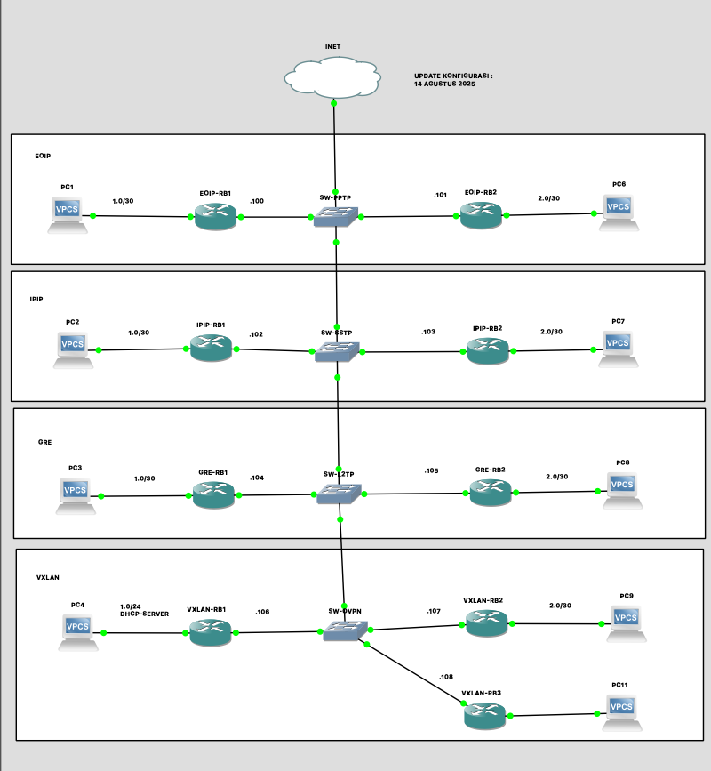

GRE (Generic Routing Encapsulation) – Tunnel Non-VPN
GRE adalah protokol tunnel layer 3 yang mengenkapsulasi paket IP di dalam paket IP lain. Cocok untuk mengangkut berbagai protokol melalui jaringan IP tanpa enkripsi, ringan, dan fleksibel.
- Kelebihan: Mendukung multi-protokol, ringan, mudah dikonfigurasi, tidak membutuhkan vendor khusus.
- Keterbatasan: Tidak terenkripsi; hanya mengangkut paket, tidak melakukan bridging layer 2.
- Gunakan Saat: Site-to-site routing antar jaringan IP, menghubungkan subnet di lokasi berbeda, atau untuk transport multi-protokol.
CONTOH KASUS
GRE-RB1
/interface gre
add local-address=192.168.190.104 name=gre-tunnel1 remote-address=\
192.168.190.105
/ip address
add address=192.168.190.104/24 interface=ether1 network=192.168.190.0
add address=192.168.1.1/30 interface=ether2 network=192.168.1.0
add address=10.10.10.1/30 interface=gre-tunnel1 network=10.10.10.0
/ip dns
set servers=8.8.8.8,8.8.4.4
/ip firewall nat
add action=masquerade chain=srcnat out-interface=ether1
/ip route
add distance=1 gateway=192.168.190.1
add distance=1 dst-address=192.168.2.0/30 gateway=10.10.10.2
GRE-RB2
/interface gre
add local-address=192.168.190.105 name=gre-tunnel1 remote-address=\
192.168.190.104
/ip address
add address=192.168.190.105/24 interface=ether1 network=192.168.190.0
add address=192.168.2.1/30 interface=ether2 network=192.168.2.0
add address=10.10.10.2/30 interface=gre-tunnel1 network=10.10.10.0
/ip dns
set servers=8.8.8.8,8.8.4.4
/ip firewall nat
add action=masquerade chain=srcnat out-interface=ether1
/ip route
add distance=1 gateway=192.168.190.1
add distance=1 dst-address=192.168.1.0/30 gateway=10.10.10.1
Tips Praktis GRE
- GRE hanya mengenkapsulasi paket IP; jika butuh bridging layer 2, gunakan EOIP atau VXLAN.
- Pastikan IP lokal/remote tunnel dapat saling jangkau melalui jaringan fisik.
- Gunakan route statik untuk subnet yang ingin dilewatkan melalui tunnel GRE.
- Untuk keamanan di jaringan publik, kombinasikan GRE dengan IPsec.
- Overhead GRE = 24 bytes per paket, perhatikan MTU jika melewati jaringan internet.
Ringkasan
GRE adalah tunnel layer 3 non-VPN yang fleksibel dan ringan untuk site-to-site routing dan transport multi-protokol antar jaringan IP. Tidak terenkripsi, tapi mudah dikonfigurasi dan kompatibel dengan berbagai perangkat.